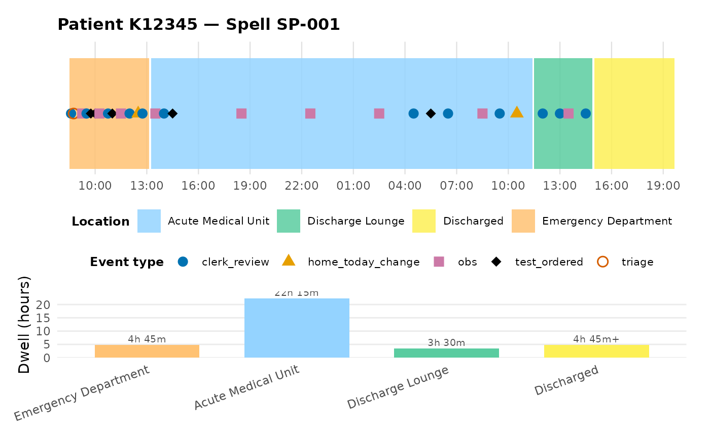

Plot a single case's timeline stacked above its per-stage duration summary
plot_journey_with_summary.Rd`patchwork`-stacks a single case's timeline ([plot_patient_journey()]) above a bar chart of that case's per-stage dwell. Requires the `patchwork` package (Suggests only).
Arguments
- data
A data frame or tibble containing the event log.
- case_id
The single case identifier to visualise.
- location_categories
Character vector of `act_type` values that mark a location/state move.
- heights
Relative heights `c(timeline, bars)` passed to `patchwork::wrap_plots()`.
- ...
Additional arguments forwarded to [plot_patient_journey()].
Examples
# \donttest{
if (requireNamespace("patchwork", quietly = TRUE)) {
plot_journey_with_summary(example_journey, case_id = "SP-001")
}

# }